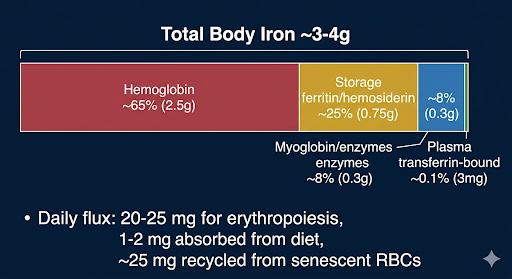
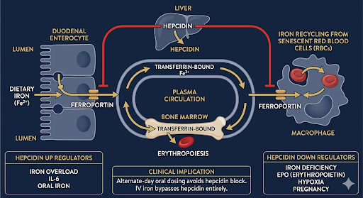
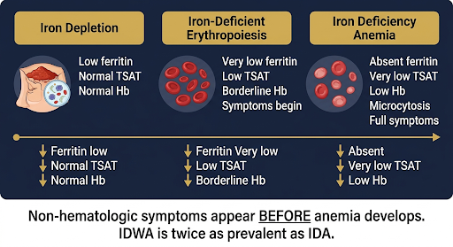
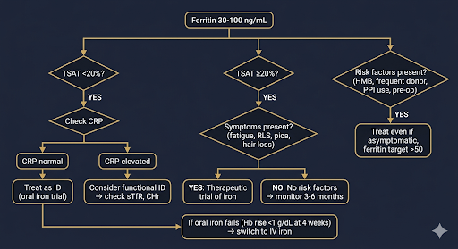
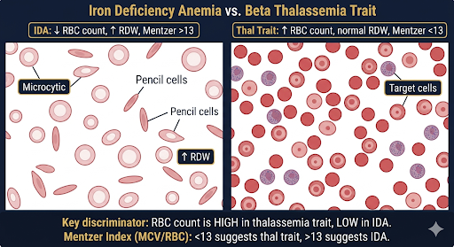
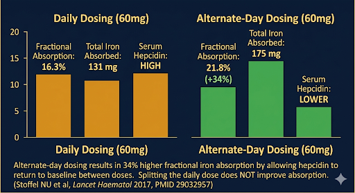
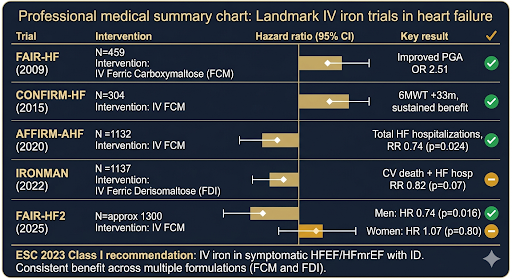

Comprehensive Evidence-Based Review
Iron Deficiency
Pathophysiology, Diagnosis, and Therapeutic Strategies Across Clinical Disciplines
Postgraduate Medical Education • June 2026
Disclosures & Agenda
Disclosures
No relevant financial relationships with ineligible companies.
This presentation reflects evidence synthesis from published, peer-reviewed literature. All statistics are referenced with PubMed identifiers (PMIDs).
Learning Objectives
- Understand the hepcidin-ferroportin axis & iron homeostasis
- Apply evidence-based diagnostic criteria for iron deficiency
- Compare oral vs IV iron formulations and dosing strategies
- Interpret landmark trials in HF, CKD, pregnancy, and IBD
- Implement guideline-directed investigation and management
Section 1
Epidemiology &
Disease Burden
The global scope of iron deficiency
Global Epidemiology of Iron Deficiency
1.92 B
People with anemia globally (GBD 2021)
~50%
Anemia cases attributable to iron deficiency
2x
Iron deficiency without anemia is at least twice as common as IDA
#1
Leading cause of years lived with disability among women in 35 countries
Key populations at risk: Children <5 years, premenopausal women (especially pregnant), people in low- and middle-income countries (LMICs), and patients with chronic inflammatory conditions.
Pasricha S-R et al. Lancet 2021;397:233–248 PMID: 33417888
Al-Naseem A et al. Iron deficiency without anaemia: a diagnosis that matters. Clin Med 2021 PMID: 33762368
Iron Deficiency by Population
| Population | Prevalence ID/IDA | Key Driver |
|---|
| Non-pregnant women (18–50 yr) | ~30–34% ID | Menstrual blood loss |
| Pregnant women | ~36% anemia (GBD 2019) | Expanded plasma volume + fetal demands |
| Adolescent females (12–21 yr) | ~40% ID; 17% IDA | Growth + menstruation + diet |
| Children <5 years (LMICs) | ~40–50% anemia | Inadequate intake, infection, parasitic disease |
| Elderly (>65 yr) | ~10–15% IDA | GI blood loss, malnutrition, CKD |
| Chronic HF patients | >50% ID | Inflammation, reduced absorption |
| IBD patients | ~36–90% ID | GI bleeding, inflammation, malabsorption |
| CKD (non-dialysis) | ~40–50% ID | Impaired iron utilization, ESA therapy |
Young MF et al. Lancet Haematol 2023 PMID: 37536355 • Chaparro CM & Suchdev PS. Ann N Y Acad Sci 2019 PMID: 31008520
Section 2
Iron Homeostasis &
Pathophysiology
The hepcidin-ferroportin axis and stages of iron deficiency
Body Iron Distribution & Kinetics
Total Body Iron: ~3–4 g

[Diagram — Body Iron Distribution]'">
Daily flux: 20-25 mg for erythropoiesis | 1-2 mg absorbed | ~25 mg recycled
The Hepcidin-Ferroportin Axis

[Diagram — Hepcidin-Ferroportin Axis]'">
Adapted from Camaschella C et al. Haematologica 2020 PMID: 32060150
Hepcidin — Master Iron-Regulating Hormone
- Synthesis: 25-amino acid peptide hormone produced by hepatocytes
- Target: Binds ferroportin (sole iron exporter) on enterocytes, macrophages, and hepatocytes
- Mechanism: Induces internalization and lysosomal degradation of ferroportin
- Effect: ↓↓ Duodenal iron absorption, ↓↓ Macrophage iron release, ↓↓ Hepatocyte iron mobilization
Hepcidin is UPREGULATED by:
- Iron overload (homeostatic feedback)
- Inflammation/Infection — IL-6 is a potent inducer
- Oral iron supplementation (transient spike lasting >24h)
Hepcidin is DOWNREGULATED by:
- Iron deficiency (allowing increased absorption)
- Erythropoietic drive (hypoxia, EPO, hemorrhage)
- Pregnancy (increased iron demand)
Clinical Implications
- Alternate-day dosing — oral iron acutely raises hepcidin, blocking absorption for >24 hours
- Functional iron deficiency — hepcidin-driven sequestration despite adequate stores
- IV iron bypasses hepcidin blockade entirely
- IRIDA — TMPRSS6 mutations → elevated hepcidin
Progressive Stages of Iron Deficiency
| Stage | Bone Marrow Iron | Ferritin | TSAT | Hb/MCV | Clinical |
|---|
| 1. Iron Depletion | ↓ | ↓ <30 µg/L | Normal | Normal | Often asymptomatic; fatigue possible |
| 2. Iron-Deficient Erythropoiesis | Absent | ↓ <20 µg/L | ↓ <20% | Normal or borderline | Subtle cognitive/performance deficits |
| 3. Iron Deficiency Anemia | Absent | ↓↓ <12–15 µg/L | ↓↓ <15% | ↓ Hb, ↓ MCV, ↑ RDW | Fatigue, pallor, dyspnea, pica, restless legs |

[Diagram — Stages of Iron Deficiency]'">
Critical point: All tissues are iron-deficient in Stage 2 before anemia develops. Non-hematologic manifestations (fatigue, cognitive impairment, restless legs syndrome, pica) can occur with normal hemoglobin. IDWA is at least twice as prevalent as IDA.
Camaschella C. N Engl J Med 2015;372:1832–1843 PMID: 25946282 • Al-Naseem A et al. Clin Med 2021 PMID: 33762368
Clinical Recognition — RLS, Pica & Pagophagia
Pagophagia (Ice Craving)
- Highly specific for iron deficiency
- Pathognomonic when present — resolves within days of iron repletion
- Mechanism: ?oral cooling enhances dopamine transmission in iron-deficient brain
- Screening: "Do you ever crave or chew ice?" — patients rarely volunteer this
- Other pica forms: starch (amylophagia), clay (geophagia), dirt
Restless Legs Syndrome
- Brain iron deficiency — low CSF ferritin despite normal peripheral iron stores
- Iron is first-line therapy for RLS (AASM guideline)
- Target ferritin >75–100 µg/L (higher than for IDA alone)
- IV iron (FCM 1,000 mg) effective in refractory RLS
- Oral iron may suffice for mild cases; IV for severe or oral-intolerant
Allen RP et al. Sleep Med 2018 — IRST consensus PMID: 29425576
Teaching point: These symptoms resolve with iron treatment — not with behavioral intervention. Asking about ice craving is a high-yield clinical question that takes 5 seconds. In RLS, check ferritin in ALL patients — dopamine agonists are second-line after iron repletion.
Section 3
Diagnosis of
Iron Deficiency
Laboratory evaluation and emerging biomarkers
Laboratory Diagnosis of Iron Deficiency
Primary Tests
| Parameter | Finding in ID |
|---|
| Serum ferritin | ↓ (most sensitive and specific) |
| Transferrin saturation (TSAT) | ↓ <20% |
| Serum iron | ↓ (diurnal variation; unreliable alone) |
| TIBC | ↑ (reflects apo-transferrin) |
| sTfR (soluble transferrin receptor) | ↑ (distinguishes IDA from ACD) |
CBC Findings
| Parameter | Finding in IDA |
|---|
| Hemoglobin | ↓ |
| MCV | ↓ <80 fL (microcytosis) |
| MCH | ↓ (hypochromia) |
| RDW | ↑ (anisocytosis) |
| Reticulocyte Hb (CHr) | ↓ (early indicator, <28 pg) |
Gold Standard
Bone marrow biopsy with Perls' Prussian blue staining — absence of stainable iron in macrophages. Rarely performed in modern practice; ferritin is an excellent surrogate.
ASH 2023 Draft Recommendations — Ferritin Cutoffs
| Population | Recommended Ferritin Cutoff | Strength | Notes |
|---|
| Children 9 mo – 4 yr |
≤20 ng/mL (rather than ≤12) |
Conditional |
Without known inflammation; higher threshold if inflamed |
| General adults (excluding menstruating/pregnant) |
≤30 ng/mL (rather than ≤15) |
Conditional |
Low certainty evidence ⨁⨁◯◯ |
| Menstruating individuals |
≤30 ng/mL; against ≤15
Consider ≤50 if HMB/symptoms/risk factors |
Conditional |
Detailed menstrual history essential |
| Symptomatic or at-risk adults |
≤50 ng/mL |
Good Practice |
Especially pre-op, planning pregnancy, HMB |
Key shift: ASH is moving from the traditional ≤12–15 ng/mL cutoff toward higher thresholds (≤30 ng/mL) to capture iron deficiency earlier — before anemia develops.
ASH Draft Recommendations for Diagnosis of ID, Public Comment 2023–2024 • WHO Guideline on Use of Ferritin Concentrations, 2020
The "Gray Zone" — Ferritin 30–100 ng/mL

[Diagram — Gray Zone Ferritin Decision Flowchart]'">
This is where clinical reasoning matters most. ASH says ≤30 is ID — but what about the symptomatic patient with ferritin 45?
| Scenario | Ferritin | TSAT | Symptoms | Action |
|---|
| Clear ID |
30–50 |
<20% |
Any |
Treat as ID |
| Probable ID |
30–50 |
≥20% |
Fatigue, pica, RLS, hair loss |
Therapeutic trial of iron |
| Possible ID |
50–100 |
<20% |
Symptoms + risk factors (HMB, donor) |
Check sTfR, CHr, %HYPO |
| Unlikely ID |
50–100 |
≥20% |
None |
Monitor; recheck in 3–6 months |
Functional ID
(inflammation present) |
50–100 |
<20% |
CRP ↑, underlying disease active |
sTfR/log ferritin; consider IV iron trial |
Principle: Ferritin is a continuous variable, not a binary switch. The clinical context + TSAT are more informative than the ferritin number alone. In chronic inflammatory conditions, ferritin 100 may still represent iron deficiency.
Case — The Gray Zone in Practice
Presentation
A 58-year-old woman with 4 months of fatigue, hair thinning, and poor sleep. Postmenopausal × 5 years. No GI symptoms. BMI 24. On PPI for GERD. Non-smoker.
Hb 12.1 g/dL (WNL), MCV 82 fL (borderline)
Ferritin 62 µg/L, TSAT 17%, CRP 2 mg/L (normal)
Analysis
- Ferritin 62 — above the ASH ≤30 cutoff, below the ≤100 HF cutoff
- TSAT 17% — below the <20% threshold → impaired iron delivery
- Normal CRP → ferritin is not confounded by inflammation
- PPI use → reduced iron absorption
- This patient has iron deficiency without anemia (IDWA)
Plan
- Stop PPI if possible, or switch to H2 blocker
- Therapeutic trial: Oral iron, alternate-day dosing × 8 weeks
- Reassess symptoms + repeat ferritin/TSAT at 8 weeks
- If no response → IV iron
- Coeliac screen (anti-tTG) — always in unexplained ID
Teaching point: The "gray zone" ferritin of 30–100 is where clinical acumen is tested. Use TSAT, symptoms, risk factors, and therapeutic trials — not rigid cutoffs.
Interpreting Ferritin in the Setting of Inflammation
The Problem
Ferritin is an acute-phase reactant. In chronic inflammatory states, ferritin can be "falsely" normal or elevated despite true iron deficiency.
Hepcidin rises with IL-6 → iron trapped in macrophages → high ferritin but low circulating iron.
Adjusted Thresholds in Inflammation
| Condition | Ferritin Cutoff (µg/L) |
|---|
| General population | <30 |
| Chronic HF | <100 (or <300 if TSAT <20%) |
| CKD (non-dialysis) | <100 (or TSAT <20%) |
| IBD (active) | <100 |
| Chronic inflammatory disease | <100 |
Ancillary Markers to Distinguish IDA from Anemia of Chronic Disease
- sTfR/log ferritin index (Thomas plot) — elevated in IDA, normal in ACD
- Reticulocyte hemoglobin content (CHr) — <28 pg suggests iron-restricted erythropoiesis
- % Hypochromic red cells (%HYPO) — >5% indicates functional ID
- Hepcidin — not yet clinically available as a validated assay
Cacoub P et al. J Intern Med 2022 PMID: 35466452
Microcytic Anemia — Differential Diagnosis

[Diagram — Peripheral Blood Smear: IDA vs Thalassemia Trait]'">
Not every microcytic anemia is iron deficiency. Misdiagnosis → wrong treatment → harm.
| Parameter | Iron Deficiency Anemia | Thalassemia Trait | Anemia of Chronic Disease |
|---|
| MCV | ↓↓ (may be very low) | ↓↓ (disproportionately low for Hb) | ↓ or normal |
| RBC count | ↓ (decreased production) | ↑ or normal (ineffective erythropoiesis) | ↓ |
| RDW | ↑ (anisocytosis) | Normal (uniform microcytosis) | Normal or mild ↑ |
| Ferritin | ↓↓ | Normal or ↑ | Normal or ↑ |
| Serum iron / TSAT | ↓↓ | Normal | ↓↓ |
| TIBC | ↑ | Normal | ↓ |
Mentzer Index
(MCV / RBC) | >13 | <13 | Variable |
| Peripheral smear | Hypochromia, pencil cells, target cells | Basophilic stippling, target cells, nucleated RBCs | Normocytic or mildly microcytic |
Quick rule: Mentzer index <13 → thalassemia trait likely → check Hb electrophoresis before giving iron. RBC count is the single most overlooked discriminator — thalassemia trait has ↑ RBC count; IDA has ↓ RBC count. Giving iron to thalassemia trait is futile and may cause iron overload.
Mentzer WC. J Pediatr 1973 • Camaschella C. N Engl J Med 2015 PMID: 25946282
Section 4
Oral Iron Therapy
First-line treatment and the alternate-day dosing paradigm
Oral Iron — First-Line Therapy
Formulations & Elemental Iron Content
| Preparation | Elemental Iron |
|---|
| Ferrous sulfate (dried) | ~65 mg per 200 mg tablet |
| Ferrous sulfate (heptahydrate) | ~60 mg per 300 mg tablet |
| Ferrous gluconate | ~35 mg per 300 mg tablet |
| Ferrous fumarate | ~65–100 mg per tablet |
| Iron polymaltose complex | ~100 mg per tablet |
Expected Response
- Hb rise of ~2 g/dL over 3–4 weeks
- Confirmatory reticulocytosis at days 5–10
- Continue for 3–6 months after Hb normalization to replete stores
- Target ferritin >50–100 µg/L and TSAT >20%
Poor Response — "Refractory IDA"
- Non-adherence (GI side effects)
- Ongoing blood loss exceeding replacement
- Malabsorption (celiac, H. pylori, PPI use, bariatric surgery)
- Incorrect diagnosis (thalassemia trait, ACD)
- IRIDA (TMPRSS6 mutation)
The Alternate-Day Dosing Paradigm

[Diagram — Daily vs Alternate-Day Iron Absorption]'">
Stoffel et al. (2017) — Two Open-Label RCTs PMID: 29032957
| Study | Design | Result |
|---|
Study 1
Consecutive vs Alternate Day |
40 iron-depleted women (ferritin ≤25 µg/L); 60 mg iron daily ×14d vs alternate days ×28d (same total dose) |
Alternate-day: 34% higher fractional absorption
(21.8% vs 16.3%, p=0.0013)
Total iron absorbed: 175 mg vs 131 mg |
Study 2
Once Daily vs Twice Daily |
20 women; 120 mg once daily vs 60 mg BID ×3d |
No difference in total absorption
Twice-daily dosing → higher hepcidin (p=0.013) |
Mechanism
Oral iron acutely increases hepcidin for >24 hours, blocking absorption of subsequent doses. Alternate-day dosing allows hepcidin to return to baseline between doses.
Practical Recommendation
- Single morning dose, empty stomach
- Every other day (e.g., M/W/F)
- Splitting dose does NOT improve absorption
- May improve GI tolerability
Stoffel NU et al. Lancet Haematol 2017 • Stoffel NU et al. Haematologica 2020 PMID: 31413088 (confirmed in anemic women)
Oral Iron — Adjuncts & Practical Tips
Vitamin C Co-Administration
Li et al. JAMA Network Open 2020 PMID: 33136134
RCT of 440 adults with IDA: iron + vitamin C vs iron alone. Primary endpoint: Hb change at 2 weeks.
No difference
Hb change: +1.9 vs +1.8 g/dL (p=0.62)
Vitamin C does not meaningfully enhance absorption in standard practice. The small theoretical benefit does not justify routine co-administration.
Enhancing Absorption
- Take on empty stomach (1 hr before or 2 hr after meals)
- If GI upset, take with small amount of food
- Avoid concurrent tea, coffee, calcium, antacids, PPIs
- Heme iron (red meat) is absorbed independently of hepcidin
Managing GI Side Effects
- Start low, go slow
- Switch formulation (gluconate < sulfate < fumarate)
- Alternate-day dosing reduces GI symptoms
- Enteric-coated or sustained-release preparations (lower absorption)
- If intolerant → IV iron
Alternate-Day Dosing — Making It Work in Practice
The Evidence Is Clear
- 34% higher fractional absorption (Stoffel 2017)
- Lower hepcidin response → more iron absorbed per mg
- Better GI tolerability
- Same or better Hb rise vs daily dosing in RCTs
But Adherence Is the Real Challenge
Patients struggle to remember "every other day" regimens. Adherence drops significantly vs daily routines.
Practical Strategies
- Monday-Wednesday-Friday framing (not "every other day")
- Calendar marking: "even days" / "odd days" of the month
- Smartphone daily alarm with day-of-week labels
- Pill box with day labels — leave empty on off-days
- Link to existing routine: "with Monday/Wednesday/Friday breakfast"
Counseling Script
"Take one tablet on Monday, Wednesday, and Friday mornings on an empty stomach. This sounds counterintuitive — taking less often actually gets MORE iron into your body. And it's easier on your stomach."
Section 5
Intravenous Iron
Formulations
Modern parenteral iron options and comparative safety
Intravenous Iron Formulations — Comparison
| Formulation | Brand | Max Single Dose | Infusion Time | Test Dose | Key Features |
|---|
| Ferric Carboxymaltose |
Injectafer |
750 mg (max 1,500 mg per course) |
15 min (push) or IV infusion |
No |
Most studied in HF; ↑ risk of hypophosphatemia |
Ferric Derisomaltose
(iron isomaltoside 1000) |
Monoferric / Monofer |
20 mg/kg (up to 1,000 mg) |
20 min |
No |
Lowest hypophosphatemia risk; single-visit total-dose replacement |
| Iron Sucrose |
Venofer |
200–300 mg |
30 min – 2 hr |
No |
Multiple visits needed; well-established safety |
| Ferumoxytol |
Feraheme |
510 mg |
15 min |
No |
Low hypophosphatemia; boxed warning for hypersensitivity |
| Low MW Iron Dextran |
INFeD |
1,000 mg |
1–4 hr |
Yes |
Total-dose infusion possible; requires test dose (0.6% anaphylaxis risk) |
Zhao C, He W. Med Int 2026. Efficacy of oral vs IV iron: systematic review and meta-analysis • Auerbach M et al. Am J Hematol 2020 — FERWON-IDA trial
FCM-Associated Hypophosphatemia — A Clinical Concern
Mechanism
FCM impairs degradation of intact FGF23 → elevated FGF23 → ↓ renal phosphate reabsorption and ↓ 1,25(OH)₂D → urinary phosphate wasting and hypophosphatemia.
| Trial | Comparison | Hypophosphatemia
(<2.0 mg/dL) |
|---|
| FIRM (Wolf et al. JCI Insight 2018) | FCM vs Ferumoxytol | 50.8% vs 0.9% |
| Wolf et al. JAMA 2020 (Trial A) | FCM vs Ferric Derisomaltose | ~75% vs ~8% |
| PREVENTT sub-study 2025 | FCM 1,000 mg pre-op | ~37% any; ~9% moderate/severe |
Clinical Significance
- Usually asymptomatic and self-limited (resolves ~12 weeks)
- Case reports of hypophosphatemic osteomalacia with repeated dosing
- Monitor phosphate in patients receiving multiple FCM infusions
- Ferric derisomaltose and ferumoxytol associated with significantly lower risk
Recommendation
Consider ferric derisomaltose (Monoferric) or ferumoxytol in patients at high risk for hypophosphatemia complications — those with pre-existing bone disease, repeated dosing needs, or CKD-MBD. Check baseline/follow-up phosphate in patients receiving repeated FCM doses. Clinically significant osteomalacia is rare but reported. For persistent/severe hypophosphatemia: oral phosphate supplementation (1–2 g/day in divided doses) ± calcitriol if FGF23-mediated.
Wolf M et al. JAMA 2020 — Two RCTs comparing FCM vs ferric derisomaltose • Arora I et al. JCEM Case Rep 2023
IV Iron — Safety Profile & Adverse Events
Infusion Reactions
- Minor: Transient flushing, myalgia, arthralgia, metallic taste (common; self-limited)
- Moderate: Chest tightness, back pain, hypotension (Fishbane reaction — complement activation-related pseudo-allergy)
- Severe: Anaphylaxis (rare; 0.01–0.1% with modern formulations)
Risk is LOWER with newer formulations than historical high-MW iron dextran.
General Safety
- No routine test dose for modern formulations (FCM, FDI, iron sucrose, ferumoxytol)
- Avoid in first trimester of pregnancy (limited data)
- Safe in 2nd/3rd trimester
- Avoid during active infection (theoretical risk of promoting bacterial growth)
- Contraindicated: known hypersensitivity, iron overload (hemochromatosis)
Modern IV iron is safe. A meta-analysis of >10,000 patients found no increased risk of serious adverse events compared with placebo or oral iron.
Pre-Operative Anemia & Patient Blood Management
The Problem
- Pre-operative anemia prevalence: ~30–40% in elective surgery
- Independent risk factor for transfusion, morbidity, mortality, and prolonged LOS
- Each 1 g/dL drop in pre-op Hb → ~1.5× increase in 30-day mortality
- Often discovered days before surgery — too late for effective oral iron
Patient Blood Management (PBM) — 3 Pillars
- Optimize erythropoiesis: ID screen + iron repletion 2–4 weeks pre-op
- Minimize blood loss: Surgical technique, tranexamic acid
- Harness tolerance of anemia: Restrictive transfusion thresholds
IV Iron Pre-Op — Evidence
- PREVENTT (Richards et al. Lancet 2020 PMID: 32828615): FCM vs placebo pre-op; no difference in primary composite. Debate about timing (too close to surgery)
- Meta-analyses: IV iron reduces transfusion in orthopedic + colorectal surgery when given ≥2 weeks pre-op
- Recommended: screen at time of surgical listing → treat ID early
- Preferred: FDI (single total-dose infusion) or FCM
Who to Screen
All patients for major surgery (EBL >500 mL). Ferritin + TSAT + Hb at surgical listing. Treat ID even if Hb is normal. Target pre-op Hb >13 g/dL.
Transfusion Avoidance — The Role of Rapid IV Iron
When to Transfuse — Modern Thresholds
| Scenario | Transfusion Threshold |
|---|
| Hemodynamically unstable | Transfuse regardless of Hb |
| Acute bleeding + IDA | Hb <70–80 g/L (restrictive) |
| Stable IDA, asymptomatic | Avoid transfusion — IV iron alone |
| Stable IDA, symptomatic | Hb <70 g/L; IV iron if Hb ≥70 |
| Cardiovascular disease | Hb <80 g/L (liberal threshold) |
| Postpartum IDA | IV iron preferred; transfuse if Hb <60–70 or symptomatic |
Why Avoid Transfusion?
- TRALI, TACO, alloimmunization, infection risk
- Length of stay and cost
- Modern IV iron can raise Hb by 1–2 g/dL/week
- Single-visit FDI infusion = total-dose replacement
- Patient preference: most prefer IV iron over transfusion when counseled
Evidence Supporting IV Iron Over Transfusion
- PIVOTAL (2019): proactive IV iron reduced transfusions by 28% PMID: 30462937
- Multiple RCTs in postpartum, post-op, GI bleeding: IV iron non-inferior to transfusion for stable patients
- NICE 2015: IV iron should be offered before transfusion in non-urgent IDA
Principle: Transfuse for hemodynamic instability or severe symptomatic anemia. For stable iron deficiency, IV iron is safer, cheaper, and more durable than transfusion — it treats the cause, not just the hemoglobin number.
Section 6
Iron Deficiency in
Heart Failure
Landmark trials and guideline-directed therapy
Iron Deficiency in Heart Failure — Why It Matters
>50%
Prevalence of ID in chronic HF
Up to 80%
Prevalence of ID in acute HF
Independent
Predictor of mortality (regardless of Hb)
ESC/ACC Definition of ID in HF
Serum ferritin <100 µg/L OR ferritin 100–299 µg/L with TSAT <20%
Why Does ID Matter in HF?
- Iron is a cofactor for mitochondrial enzymes (oxidative phosphorylation)
- ID → impaired cardiomyocyte and skeletal muscle energetics
- ID independently associated with ↓ exercise capacity, ↓ QoL, and ↑ HF hospitalizations
- Effects are independent of anemia — non-anemic iron deficiency in HF still carries poor prognosis
- ID is highly prevalent across the full LVEF spectrum — including HFpEF (~50%); data for IV iron treatment in HFpEF are emerging but less robust than for HFrEF
Landmark Trials — IV Iron in Heart Failure

[Diagram — Landmark IV Iron Trials in Heart Failure]'">
| Trial | Year | N | Intervention | Primary Outcome | Result |
|---|
FAIR-HF
PMID: 19920055 |
2009 |
459 |
FCM vs placebo (24 wk) |
PGA + NYHA class |
50% vs 28% improved PGA (OR 2.51, p<0.001) |
CONFIRM-HF
PMID: 25176939 |
2015 |
304 |
FCM vs placebo (52 wk) |
6MWT change at wk 24 |
+33 m vs placebo (p=0.002); sustained to wk 52 |
AFFIRM-AHF
PMID: 33276917 |
2020 |
1,132 |
FCM vs placebo (52 wk)
Post-acute HF |
Total HF hosp + CV death |
RR 0.74 (p=0.024); 26% reduction in total HF hospitalizations |
IRONMAN
PMID: 36347265 |
2022 |
1,137 |
Ferric derisomaltose vs usual care (2.7 yr median FU) |
CV death + HF hosp |
RR 0.82 (p=0.07); pre-COVID RR 0.76 (p=0.047) |
FAIR-HF2
(DZHK05) |
2025 |
1,105 |
FCM vs placebo
LVEF ≤45% |
CV death + HF hosp |
Men: HR 0.74 (p=0.016)
Women: HR 1.07 (p=0.80) |
Anker SD et al. NEJM 2009 • Ponikowski P et al. EHJ 2015 • Ponikowski P et al. Lancet 2020 • Kalra PR et al. Lancet 2022
ESC 2023 Focused Update — HF Guidelines
Class I Recommendation (Level A)
IV iron supplementation is recommended in symptomatic patients with HFrEF and HFmrEF, and iron deficiency, to alleviate HF symptoms and improve quality of life.
Upgraded from Class IIa in ESC 2021.
Class IIa Recommendation (Level A)
IV iron supplementation with FCM or FDI should be considered to reduce the risk of HF hospitalization.
Other Guidelines
| Body | Recommendation |
|---|
| ACC/AHA/HFSA 2022 | Class 2a (IV iron in HFrEF + ID) — improves functional status and QoL |
| HFSA 2023 Scientific Statement | Emphasized screening and coordinated ID management in HF |
FDA 2024: First HF indication granted to FCM (Injectafer) to improve exercise capacity in HF patients with ID.
FAIR-HF2 — Sex-Specific Outcomes
Karakas M et al. Eur J Heart Fail 2025
Sex-specific analysis of 1,105 HF patients (LVEF ≤45% + ID) randomized to FCM vs placebo.
Men (n=737)
| Endpoint | HR/RR | p-value |
|---|
| CV death + 1st HF hosp | HR 0.74 | 0.016 |
| Total HF hospitalizations | RR 0.79 | 0.136 |
| CV death/HF hosp (TSAT<20%) | HR 0.73 | 0.028 |
| All-cause mortality | HR 0.86 | 0.33 |
Clinically relevant reduction in CV death and HF hospitalizations.
Women (n=368)
| Endpoint | HR/RR | p-value |
|---|
| CV death + 1st HF hosp | HR 1.07 | 0.80 |
| Total HF hospitalizations | RR 1.06 | 0.86 |
| CV death/HF hosp (TSAT<20%) | HR 1.21 | 0.58 |
| All-cause mortality | HR 1.46 | 0.24 |
No benefit observed. Potential mortality signal (p-for-interaction = 0.13).
Clinical implication: This sex-specific analysis is exploratory and hypothesis-generating. It is a subgroup finding from a trial not powered for sex-stratified outcomes. Current practice should not be changed based on this single analysis, but awareness and further research are warranted.
Section 7
Special Populations
CKD, pregnancy, IBD, and GI evaluation
Iron Deficiency in Chronic Kidney Disease
PIVOTAL Trial — Macdougall et al. NEJM 2019 PMID: 30462937
2,141 hemodialysis patients randomized to proactive high-dose IV iron (400 mg monthly, max ferritin 700 µg/L or TSAT 40%) vs reactive low-dose IV iron (triggered by ferritin <200 µg/L or TSAT <20%).
| Outcome | Proactive | Reactive | HR | p-value |
|---|
| Primary: Death/MI/stroke/HF hosp | 29.3% | 32.7% | 0.85 | 0.004 |
| ESA dose | Significant reduction with proactive iron | — | <0.001 |
| Blood transfusions | 20.8% | 27.7% | 0.72 | <0.001 |
| Infection (safety) | No difference between groups | — | NS |
KDIGO Anemia Guidelines (2025 Update)
- Monitor Hb and iron indices regularly in CKD
- IV iron preferred over oral for CKD G5/G5D
- Target ferritin 200–500 µg/L in dialysis patients on ESA
- Proactive iron repletion strategy advocated
Key Takeaways
- Proactive high-dose IV iron is superior to reactive strategy
- Reduces ESA requirements and transfusions
- No increase in infection risk
- Ferric derisomaltose/FCM are preferred formulations
Iron Deficiency in Pregnancy
UK Guidelines — Pavord et al. Br J Haematol 2020 PMID: 31578717
| Trimester | Anemia Cutoff (Hb) |
|---|
| 1st trimester | <110 g/L |
| 2nd/3rd trimester | <105 g/L |
| Postpartum | <100 g/L |
Iron Requirements During Pregnancy
- Total iron demand: ~1,000 mg
- 1st trimester: ~0.8 mg/day
- 3rd trimester: ~7.5 mg/day
- Fetal iron demand takes priority over maternal
Treatment Approach
- Mild IDA (Hb 100–109 g/L): Oral iron first-line. Reassess at 2–3 weeks.
- Moderate-severe IDA (Hb <100 g/L): Consider IV iron.
- IV iron: Safe from 2nd trimester onward.
- Ferric derisomaltose: single total-dose infusion (up to 1,000–1,500 mg)
- Iron sucrose: multiple infusions of 200 mg
FLIP Study (2025)
Ferric derisomaltose vs iron sucrose in pregnancy: FDI enabled shorter total infusion time (252 vs 410 min, p<0.0001), fewer visits, and higher treatment completion rates. Clinic throughput increased ~50%.
Lin Y, VanderMeulen H et al. JOGC 2025
Iron Deficiency in Inflammatory Bowel Disease
Magnitude of the Problem
- ID prevalence in IBD: 36–90%
- Most common extraintestinal manifestation
- Causes: Chronic GI bleeding, impaired duodenal absorption (inflammation → hepcidin), reduced oral intake
- Anemia independently associated with ↓ QoL and ↑ healthcare utilization
ECCO Guidelines — IV Iron Preferred
- IV iron bypasses impaired absorption and avoids GI irritation
- FCM and ferric derisomaltose are both effective
- Oral iron can be attempted in mild, inactive disease
- Target: Hb normalization + ferritin >100 µg/L
- Monitor iron indices with disease activity assessments
Kulnigg et al. — FCM in IBD PMID: 18194574
| Group | Result |
|---|
| IV FCM (n=136) | Hb +3.1 g/dL at wk 12 |
| Oral FeSO₄ (n=60) | Hb +1.8 g/dL at wk 12 |
| IV iron superior (p<0.001); better tolerability |
Practice point: In active IBD, IV iron is the preferred route. Ferritin cutoff for diagnosis is <100 µg/L (adjusted for inflammation). Correcting ID improves QoL independently of disease activity.
Iron Deficiency Without Anemia — To Treat or Not to Treat?
Arguments FOR Treating IDWA
- Fatigue improves with iron (Verdon et al. BMJ 2003 PMID: 12870203 — RCT: iron improved fatigue in non-anemic women)
- Cognitive function may improve
- RLS responds to iron (brain iron deficiency)
- Hair loss (telogen effluvium) — ferritin <70 is a common contributor
- Pre-operative optimization reduces transfusion
- Prevents progression to IDA
- HF: guideline-mandated regardless of Hb (ESC Class I)
Arguments AGAINST Treating All IDWA
- NNT for fatigue improvement is modest (~5–10)
- Placebo effect in fatigue studies is significant
- Oral iron side effects in someone with normal Hb may not be worth it
- Overmedicalization: "treating a lab value, not a patient"
- Long-term iron supplementation safety in normal-Hb individuals not well studied
- Cost of IV iron for widespread IDWA screening
Clinical consensus (2024–2026): Treat IDWA when (1) symptoms are present and attributable, (2) ongoing risk of progression to IDA (HMB, pregnancy, surgery), or (3) high-risk comorbidity (HF, CKD). Do NOT treat asymptomatic IDWA with normal Hb in a patient with no risk factors — monitor instead. This is an important teaching point: we treat patients, not ferritin levels.
IRIDA — When Oral Iron Fails Despite Perfect Adherence
Iron-Refractory Iron Deficiency Anemia (OMIM #206200)
- Genetics: Autosomal recessive; TMPRSS6 mutations → impaired matriptase-2 → hepcidin excess
- Pathophysiology: Matriptase-2 normally cleaves hemojuvelin → suppresses hepcidin. Loss-of-function → unopposed hepcidin production → ferroportin blockade → enterocyte iron trapped
- Key features: Microcytic anemia from infancy/childhood; no response to oral iron; partial response to IV iron; inappropriately normal/high hepcidin; low TSAT despite normal/high ferritin
Diagnostic Clues
- Microcytic anemia refractory to ≥2 courses oral iron
- Family history (autosomal recessive)
- Consanguinity increases probability
- Normal CRP — no inflammatory confound
- Genetic testing: TMPRSS6 sequencing
Management
- IV iron is the mainstay — bypasses enterocyte blockade
- Response is partial (hepcidin also blocks macrophage recycling)
- Higher doses and more frequent infusions often needed
- Emerging: hepcidin antagonists (clinical trials)
Teaching point: IRIDA explains why some patients truly cannot absorb oral iron. It is rare but underdiagnosed. Consider in any patient who has failed ≥2 proper oral iron trials with proven compliance. IRIDA is NOT "non-adherence" — it's a genetic disorder of iron regulation. Testing for TMPRSS6 mutations is definitive.
Finberg KE et al. Nat Genet 2008 PMID: 18408718 • De Falco L et al. Haematologica 2013 PMID: 23300179
Section 8
Guideline-Directed
Investigation
BSG 2021 — investigating the underlying cause
BSG 2021 — Investigation of IDA in Adults
Snook J et al. Gut 2021 PMID: 34497146
~1 in 3 men and postmenopausal women with IDA have an underlying GI pathology — most commonly colorectal cancer, gastric cancer, or coeliac disease.
Who Needs Urgent Investigation?
- All men with unexplained IDA
- All postmenopausal women with unexplained IDA
- Premenopausal women with IDA and any "red flag" symptoms (weight loss, change in bowel habit, rectal bleeding, family history of CRC)
Investigation Algorithm
- Serology: Anti-tTG (coeliac screen) — consider in ALL patients
- Bidirectional endoscopy: OGD + colonoscopy (or CT colonography)
- If negative: Wireless capsule endoscopy (small bowel evaluation)
- FIT (fecal immunochemical test): Updated BSG/ACPGBI 2025 — triage tool to prioritize endoscopic investigation
BSG — Iron Replacement
- Ferritin <15 µg/L: diagnostic in uncomplicated patients
- Ferritin 15–50 µg/L + low MCV/MCH: probable ID
- Oral ferrous sulfate first-line
- IV iron if: intolerant, non-responsive, severe anemia (Hb <80 g/L), active IBD, or need for rapid correction
AGA 2020 Guidelines PMID: 32673793
- Bidirectional endoscopy recommended
- Non-invasive testing with FIT/fecal calprotectin may guide triage
- Routine small bowel evaluation not recommended after negative bidirectional endoscopy in asymptomatic patients
Etiology of Iron Deficiency — A Systematic Approach
Blood Loss
- GI: CRC, gastric cancer, PUD, angiodysplasia, esophagitis, NSAID enteropathy, hookworm (LMICs)
- Gynecologic: Heavy menstrual bleeding, uterine fibroids, adenomyosis
- Other: Frequent blood donation, epistaxis, hematuria
Decreased Absorption
- GI surgery: Gastrectomy, gastric bypass, duodenal switch
- Mucosal disease: Coeliac disease, H. pylori gastritis, atrophic gastritis, IBD
- Drugs: PPIs, H2 blockers, antacids (↓ gastric acid → ↓ Fe³⁺ → Fe²⁺ reduction)
- H. pylori infection: Competes for iron, causes chronic gastritis → impaired absorption; eradication improves iron status
- IRIDA: TMPRSS6 mutation → hepcidin excess
Increased Demand
- Pregnancy and lactation
- Infancy and adolescence (growth)
- Erythropoiesis-stimulating agent therapy
Inadequate Intake
- Vegetarian/vegan diet (non-heme iron only)
- Malnutrition, food insecurity
- Elderly (poor dentition, reduced appetite)
- Institutionalized populations
Section 9
Clinical Workflow &
Practical Management
From diagnosis to iron repletion
Clinical Approach to Iron Deficiency
Step 1: Confirm iron deficiency — Ferritin + TSAT + CBC
↓
Step 2: Identify cause — History, coeliac screen, GI evaluation (per BSG), gynecologic assessment
↓
Step 3: Treat underlying cause + Iron repletion
Oral Iron
Mild IDA, no malabsorption, no active inflammation
Alternate-day, morning dose • Reassess Hb at 2–4 wk
IV Iron
Severe anemia (Hb <80 g/L), intolerance, malabsorption, active IBD, HF, CKD
Choose formulation per dose, comorbidities, hypophosphatemia risk
↓
Decision Node: If Hb rise <1 g/dL at 2–4 wk on oral iron → switch to IV iron. Do not rotate through multiple oral formulations.
↓
Step 4: Monitor — Hb, ferritin, TSAT at 4–12 wk after repletion. Continue oral iron × 3–6 mo after Hb normalization.
IV vs Oral Iron — Evidence Synthesis
Zhao C & He W. Meta-Analysis (31 RCTs) — Med Int 2026
| Population | SMD (Hb increase) | p-value | Conclusion |
|---|
| Cancer-related anemia | -0.662 | 0.011 | IV superior |
| CKD | -0.492 | 0.035 | IV superior |
| IBD | -0.560 | <0.001 | IV superior |
| General IDA | -0.397 | <0.001 | IV superior |
| Postoperative anemia | No significant difference |
| Restless legs syndrome | No significant difference |
Bottom line: IV iron provides faster Hb correction and fewer GI side effects across most clinical contexts. The decision between IV and oral should be individualized based on severity, acuity, etiology, and patient preference. Oral iron remains appropriate first-line for mild, uncomplicated IDA in patients who can tolerate and absorb it.
Choosing the Right IV Iron Formulation
| Clinical Scenario | Preferred IV Iron | Rationale |
|---|
| HFrEF/HFmrEF + ID | FCM or FDI | Most robust trial evidence (FAIR-HF, AFFIRM-AHF, IRONMAN) |
| CKD (hemodialysis) | Iron sucrose or FCM | PIVOTAL evidence; flexible dosing |
| Pregnancy (2nd/3rd trimester) | FDI or Iron sucrose | FDI: single-visit total-dose; Iron sucrose: extensive safety data |
| Active IBD | FCM or FDI | High-dose, rapid correction; bypasses absorption |
| Heavy menstrual bleeding | Ferumoxytol or FCM | Rapid high-dose; outpatient administration |
| Pre-op anemia (elective surgery) | FDI or Ferumoxytol | Single-visit correction; minimize hypophosphatemia risk |
| Osteoporosis / CKD-MBD risk | FDI or Ferumoxytol | Avoid FCM — hypophosphatemia/osteomalacia risk |
| Need total-dose in 1 visit | FDI or LMW iron dextran | FDI up to 20 mg/kg; dextran up to 1,000 mg |
Principle: Match the formulation to the clinical context. Consider total dose required, visit logistics, comorbidities, and formulation-specific adverse effect profiles (especially hypophosphatemia with FCM).
Section 10
Case Vignettes
Applying the evidence to clinical practice
Case 1 — The Young Woman with Fatigue
Presentation
A 28-year-old woman presents with 6 months of progressive fatigue, poor concentration, and exercise intolerance. Menstrual cycles are regular with 7 days of heavy flow. Vegetarian diet. No GI symptoms.
Hb 9.8 g/dL, MCV 74 fL, MCH 24 pg, RDW 17%
Ferritin 8 µg/L, TSAT 9%, serum iron 20 µg/dL, TIBC 480 µg/dL
Diagnosis & Plan
- Diagnosis: Iron deficiency anemia (Stage 3) due to heavy menstrual bleeding + low dietary iron intake
- Start oral ferrous sulfate 65 mg elemental iron, alternate-day dosing (M/W/F)
- Coeliac screen: anti-tTG
- Gynecology referral for HMB management
- Dietary counseling — increase heme iron sources
Expected Course
- Check Hb and reticulocyte count at 2–4 weeks
- Expected: Hb increase ~1 g/dL by week 2, ~2 g/dL by week 4
- Continue iron × 3 months after Hb normalizes
- Target ferritin >50 µg/L
Teaching point: Ferritin <15 µg/L has >99% specificity for iron deficiency. In menstruating women with clear etiology (HMB), extensive GI investigation is not required unless red flags are present. ASH 2023 suggests using ferritin ≤50 ng/mL for symptomatic women with HMB.
Case 2 — The Elderly Man with Anemia
Presentation
A 72-year-old man presents with progressive dyspnea on exertion and pallor over 3 months. No overt GI bleeding, but reports dark stools intermittently. Mild epigastric discomfort. On aspirin 75 mg daily.
Hb 7.4 g/dL, MCV 71 fL, ferritin 10 µg/L, TSAT 6%
Urgent Actions
- IV iron: Ferric carboxymaltose 1,000 mg (or FDI 1,000 mg) for rapid Hb correction
- Stool FIT testing
- Arrange urgent bidirectional endoscopy (OGD + colonoscopy)
- Stop aspirin if possible pending investigation
Investigation Findings
OGD: 3 cm antral ulcer with visible vessel (Forrest IIa). Biopsies negative for H. pylori and malignancy.
Colonoscopy: 2 tubular adenomas (low-grade dysplasia), no malignancy.
Final Plan
- Endoscopic therapy for ulcer
- PPI therapy + discontinue aspirin (or replace with PPI co-therapy)
- Repeat iron indices at 4 weeks — expected normalization of Hb
- Surveillance colonoscopy per adenoma guidelines
Teaching point: All men with unexplained IDA require urgent GI investigation. ~30% will have a significant GI pathology. The BSG mandates bidirectional endoscopy. IV iron is preferred for severe anemia (Hb <80 g/L) to enable rapid correction while awaiting investigation.
Case 3 — The HF Patient with Iron Deficiency
Presentation
A 67-year-old man with ischemic cardiomyopathy (LVEF 35%, NYHA Class III) on optimal medical therapy (ACEi, beta-blocker, MRA, SGLT2i). Persistent dyspnea and fatigue despite euvolemia.
Hb 12.8 g/dL (normal), MCV 82 fL
Ferritin 72 µg/L, TSAT 16%
Analysis
- Not anemic — but meets ESC criteria for ID in HF (ferritin <100 µg/L)
- Iron deficiency without anemia (IDWA) — common and treatable contributor to symptoms
- TSAT <20% confirms functional iron deficiency
- Oral iron is ineffective in HF due to hepcidin-mediated blockade
Management
- IV ferric carboxymaltose — per ESC Class I recommendation
- Dose: 1,000 mg (weight-based), repeat per ferritin/TSAT monitoring
- Expected: Improved 6MWT, NYHA class, KCCQ score, and reduced HF hospitalization risk
- Reassess at 4, 12, 24, and 52 weeks
FAIR-HF2 Caution
Sex-specific analysis suggests the clearest benefit is in men. The patient is male — benefit expected. For women with HF + ID, discuss the uncertainty from FAIR-HF2 but current ESC guidelines do not differentiate by sex.
Teaching point: In HF, ID treatment is guideline-directed regardless of hemoglobin level. Non-anemic ID in HF carries prognostic significance and is treatable. IV iron (not oral) is the evidence-based route.
Section 11
Emerging Topics &
Future Directions
New therapies, controversies, and unanswered questions
Emerging Therapies & Future Directions
Hepcidin-Targeting Therapies
- Anti-hepcidin antibodies / aptamers: Block hepcidin to release trapped iron in inflammatory anemia
- Ferroportin stabilizers: VIT-2763 (oral small molecule) — inhibits hepcidin-ferroportin interaction; Phase 2 trials in β-thalassemia
- BMP/SMAD pathway inhibitors: Suppress hepatic hepcidin production
Novel Iron Formulations
- Sucrosomial iron: Oral iron with phospholipid + sucrose ester matrix — bypasses gastric absorption route; reduced GI side effects
- Iron hydroxide adipate tartrate (IHAT): Nanoparticle oral iron with improved GI tolerability and absorption profile
Key Unanswered Questions
- Does IV iron improve hard mortality endpoints in HF? (HEART-FID, FAIR-HF2, and future trials)
- Why do women with HF not benefit from IV iron in FAIR-HF2? Biological difference or statistical artifact?
- What is the long-term safety of repeated high-dose IV iron (iron overload, oxidative stress, infection risk)?
- Is hypophosphatemia from FCM clinically consequential in the long term? Screening and monitoring protocols needed.
Special Populations — Athletes & Pediatrics
Iron Deficiency in Athletes
- Prevalence: 15–35% of female athletes; 5–10% of male athletes
- Mechanisms: Exercise-induced hepcidin rise (IL-6), foot-strike hemolysis (runners), GI bleeding (endurance), sweat losses
- Consequences: Impaired VO₂ max, reduced endurance, slower recovery
- Management: Screen ferritin annually. Target ferritin >50 µg/L. Oral iron first-line; IV if rapid correction needed pre-competition
- "Sports anemia": dilutional pseudo-anemia from plasma volume expansion — ferritin is normal; do NOT treat
Peeling P et al. Sports Med 2017 • Sim M et al. Eur J Appl Physiol 2019
Pediatric Iron Deficiency
- Critical window: 0–3 years — brain iron accumulation essential for myelination, dopamine synthesis, hippocampal development
- Neurodevelopmental consequences: Irreversible cognitive deficits even after iron repletion (Lozoff et al. longitudinal studies)
- Screening: AAP recommends universal screening at 12 months
- Prevention: Iron-fortified formula, delayed cord clamping, limit cow's milk (<600 mL/day after 12 mo)
- Treatment: 3–6 mg/kg/day elemental iron. IV iron reserved for severe cases or oral intolerance
Lozoff B et al. J Pediatr 2006 PMID: 16887449 • AAP Clinical Report 2010
Teaching point: In athletes, distinguish true ID (low ferritin) from dilutional sports anemia (normal ferritin). In children, iron deficiency during the first 1000 days causes neurodevelopmental harm that may not be reversible — prevention through screening and supplementation is crucial.
Section 12
Take-Home Messages
Key clinical pearls
Take-Home Messages
1. Think Beyond Hemoglobin
Iron deficiency without anemia is at least twice as common as IDA and causes fatigue, cognitive impairment, and poor outcomes. Screen with ferritin + TSAT in at-risk populations.
2. Ferritin Cutoffs Are Rising
ASH 2023 moves toward ≤30 ng/mL (adults), ≤50 ng/mL (symptomatic). In inflammation (HF, CKD, IBD), use ferritin <100 µg/L or TSAT <20%.
3. Alternate-Day Oral Iron
Single morning dose every other day — 34% higher absorption than daily dosing (Stoffel 2017). Hepcidin-mediated; improves tolerability. Vitamin C adds no meaningful benefit.
4. IV Iron Is Safe & Effective
Modern IV iron formulations enable rapid, total-dose replacement with minimal risk. Preferred over oral in HF, CKD, active IBD, severe anemia, and malabsorption.
5. HF: Guideline-Directed ID Treatment
ESC Class I: IV iron for symptomatic HFrEF/HFmrEF + ID — regardless of hemoglobin. Reduces HF hospitalizations and improves QoL. ID screening is standard of care.
6. Find the Cause
IDA in men and postmenopausal women = urgent GI investigation (BSG). ~30% have significant pathology. Coeliac screen in all unexplained IDA. Don't just replace iron — diagnose the underlying etiology.
Summary — Iron Deficiency by Clinical Context
| Context | Definition | 1st-Line Rx | Key Trial/Guide |
|---|
| General IDA |
Ferritin <30 µg/L + anemia |
Oral iron (alternate-day) |
ASH 2023; BSG 2021 PMID: 34497146 |
| HFrEF/HFmrEF |
Ferritin <100 or (100–299 + TSAT <20%) |
IV FCM or FDI — Class I ESC 2023 |
AFFIRM-AHF, IRONMAN, FAIR-HF2 |
| CKD (HD) |
Ferritin <200 µg/L or TSAT <20% |
IV iron (proactive strategy) |
PIVOTAL PMID: 30462937 |
| Pregnancy |
Hb <110 (1st) / <105 (2nd/3rd) g/L |
Oral → IV if no response |
Pavord 2020 PMID: 31578717 |
| IBD (active) |
Ferritin <100 µg/L or TSAT <16% |
IV iron preferred |
ECCO Guidelines |
| Pre-op anemia |
Hb <13 (M) / <12 (F) g/dL + ID |
IV iron (FDI/FCM) |
PREVENTT PMID: 32828615 |
| HMB |
Ferritin ≤50 ng/mL (ASH) |
Iron + address HMB |
ASH 2023 draft |
One size does not fit all. The definition of iron deficiency, preferred route of iron, and treatment targets vary by clinical context. Know the disease-specific guidelines.
References
Key References
Evidence base with PubMed identifiers
References — Key Reviews & Guidelines
- Pasricha S-R, Tye-Din J, Muckenthaler MU, Swinkels DW. Iron deficiency. Lancet 2021;397:233–248. PMID: 33417888
- Camaschella C. Iron deficiency. Blood 2019;133(1):30–39. PMID: 30401704
- Camaschella C. Iron-deficiency anemia. N Engl J Med 2015;372:1832–1843. PMID: 25946282
- Camaschella C, Nai A, Silvestri L. Iron metabolism and iron disorders revisited in the hepcidin era. Haematologica 2020;105:260–272. PMID: 32060150
- Lopez A, Cacoub P, Macdougall IC, Peyrin-Biroulet L. Iron deficiency anaemia. Lancet 2016;387:907–916. PMID: 26314490
- Snook J, Bhala N, Beales ILP, et al. BSG guidelines for the management of IDA in adults. Gut 2021;70:2030–2051. PMID: 34497146
- Al-Naseem A, Sallam A, Choudhury S, Thachil J. Iron deficiency without anaemia: a diagnosis that matters. Clin Med 2021. PMID: 33762368
- Young MF, Luo H, Suchdev PS. The challenge of defining the global burden of iron deficiency anaemia. Lancet Haematol 2023;10(9):e702–e704. PMID: 37536355
- Chaparro CM, Suchdev PS. Anemia epidemiology, pathophysiology, and etiology in LMICs. Ann N Y Acad Sci 2019;1450(1):15–31. PMID: 31008520
- Cacoub P, Choukroun G, Cohen-Solal A, et al. Iron deficiency screening is a key issue in chronic inflammatory diseases. J Intern Med 2022. PMID: 35466452
- ASH Draft Recommendations for Diagnosis of Iron Deficiency, 2023. Available at: hematology.org.
- WHO Guideline on Use of Ferritin Concentrations to Assess Iron Status, 2020.
References — Landmark Trials & Key Studies
- Stoffel NU, Cercamondi CI, Brittenham G, et al. Iron absorption from oral iron on consecutive vs alternate days. Lancet Haematol 2017;4:e524–e533. PMID: 29032957
- Stoffel NU, Zeder C, Brittenham GM, et al. Iron absorption greater with alternate-day dosing in IDA women. Haematologica 2020;105:1232. PMID: 31413088
- Li N, Zhao G, Wu W, et al. Vitamin C for iron supplementation in adult IDA. JAMA Netw Open 2020;3:e2023644. PMID: 33136134
- Anker SD, Comin-Colet J, Filippatos G, et al. FAIR-HF: FCM in HF with ID. N Engl J Med 2009;361:2436–2448. PMID: 19920055
- Ponikowski P, van Veldhuisen DJ, Comin-Colet J, et al. CONFIRM-HF: FCM in HF with ID. Eur Heart J 2015;36:657–668. PMID: 25176939
- Ponikowski P, Kirwan BA, Anker SD, et al. AFFIRM-AHF: FCM at discharge after acute HF. Lancet 2020;396:1895–1904. PMID: 33276917
- Kalra PR, Cleland JGF, Petrie MC, et al. IRONMAN: IV ferric derisomaltose in HF and ID. Lancet 2022;400:2199–2209. PMID: 36347265
- Macdougall IC, White C, Anker SD, et al. PIVOTAL: IV iron in hemodialysis. N Engl J Med 2019;380:2119–2130. PMID: 30462937
- Pavord S, Daru J, Prasannan N, et al. UK guidelines on management of ID in pregnancy. Br J Haematol 2020;188:819–830. PMID: 31578717
- Kulnigg S, Stoinov S, Simanenkov V, et al. FCM vs oral iron for IDA in IBD. Am J Gastroenterol 2008;103:1182–1192. PMID: 18194574
- Wolf M, Rubin J, Achebe M, et al. Effects of FCM vs FDI on hypophosphatemia — 2 RCTs. JAMA 2020;323:432–443. PMID: 32016310
- Zhao C, He W. Oral vs IV iron for IDA: a systematic review and meta-analysis. Med Int 2026.
- Karakas M, et al. FAIR-HF2: sex-specific outcomes. Eur J Heart Fail 2025.
- ESC 2023 Focused Update of the 2021 ESC Guidelines for HF. Eur Heart J 2023.
Thank You
Questions & Discussion
All statistics in this presentation are referenced with PubMed identifiers (PMIDs).
A complete evidence synthesis was performed using web search, Gemini AI-assisted literature consolidation, and manual verification against published sources.
Presentation built June 2026 • 50 slides • 26 cited PMIDs